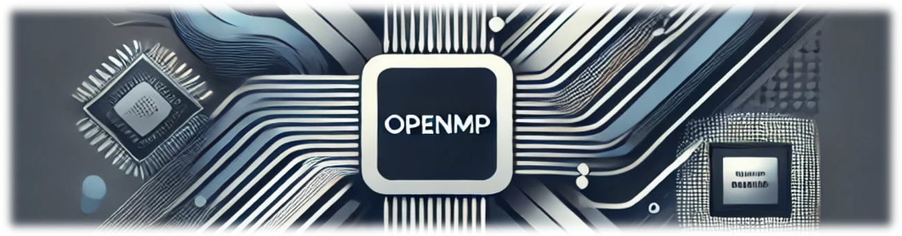

Interactive OpenMP Programming Book#
Authors: Xinyao Yi, Anjia Wang, Yonghong Yan, Chunhua Liao
Emails: xyi2@uncc.edu, anjia.wang@intel.com, yyan7@uncc.edu, liao6@llnl.gov
Institutions: University of North Carolina at Charlotte, Lawrence Livermore National Laboratory
Publication Date: 2024
About the Book#
Interactive OpenMP Programming Book pioneers the integration of Large Language Models (LLMs) such as Gemini Pro 1.5, Claude 3, and ChatGPT-4 into the educational fabric of high-performance computing. This textbook revolutionizes learning by combining cutting-edge AI with traditional educational methodologies to offer a dynamic, interactive experience through Jupyter Books. It enables code execution directly from the web browser, enhancing the learning process with real-time feedback.
Key Features#
Interactive Examples: Each chapter includes practical programming examples that readers can execute directly within the book.
Expert Insights and AI Integration: Learn high-performance computing through a seamless blend of expert knowledge and AI-generated content, ensuring both depth and pedagogical effectiveness.
Up-to-Date Content: Continuously updated with the latest OpenMP specifications to provide the most current learning experience.
Open Source and Accessible: Freely available online, reducing barriers to access and enabling a wider dissemination of knowledge.
Target Audience#
This book is designed for students, educators, and professionals in the field of computing who are interested in advancing their understanding of parallel programming using OpenMP.
Available Online For Free#
Available online for free at https://passlab.github.io/InteractiveOpenMPProgramming/cover.html, this book aims to be accessible to anyone interested in the field of high-performance computing.
Disclaimer#
The authors have made every effort to ensure that the information in this book is correct at the time of publication. The code and content are provided for instructional purposes only. The authors do not offer any warranties and expressly disclaim any liability for errors or omissions, whether such errors or omissions result from negligence, accident, or any other cause.
Book Version: Interactive OpenMP Programming Book — Version 1.0
Copyright: © 2024 Xinyao Yi et al. All rights reserved.
License: CC BY-NC-ND 4.0
This work is licensed under the Creative Commons Attribution-NonCommercial-NoDerivatives 4.0 International License[https://creativecommons.org/licenses/by-nc-nd/4.0/deed.en].
Non-Commercial Use Declaration: This publication is strictly for educational and scholarly use and is not intended for sale or any form of commercial profit. Any reproduction, adaptation, distribution, or public display of the contents of this book must adhere to the terms set forth by the Creative Commons Attribution-NonCommercial-NoDerivatives 4.0 International License. This restriction includes all media, digital or otherwise, and is enforceable under applicable copyright laws.